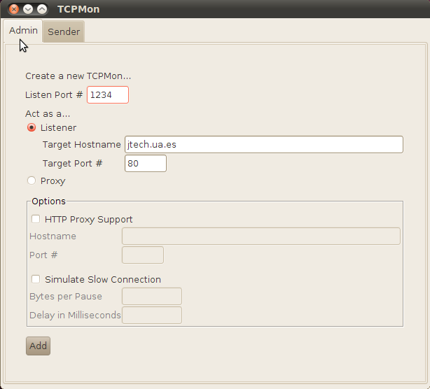

Creación de clientes para servicios web
La creación de clientes para servicios web cuenta con diferentes herramientas que generan código a partir del documento WSDL del servicio web. Independientemente de la plataforma y lenguaje que gestione el servicio web (java, .net, c++), el documento WSDL será el contrato entre cliente y servidor, y si el cliente cumple con lo especificado en él, el servicio deberá responder correctamente. Las herramientas que generan código cliente crean el esqueleto donde podremos introducir los parámetros de la llamada al servicio web, según la especificación del WSDL. Por ejemplo, la herramienta wsimport toma como entrada la URI del WSDL por línea de comando:
wsimport -s <src.dir> -d <dest.dir> -p <pkg> <wsdl.uri>
También existe una tarea equivalente de ant. Para poder utilizarla debe declararse previamente, teniendo la librería jaxws-tools.jar dentro de la variable CLASSPATH de ant:
<taskdef name="wsimport"
classname="com.sun.tools.ws.ant.WsImport" />
<wsimport sourcedestdir="${src.home}"
destdir="${bin.home}"
package="${pkg.name}"
wsdl="${wsdl.uri}" />
Con esto se generarán una serie de clases que nos permiten acceder al servicio web e invocar sus operaciones desde nuestro cliente. Dentro de estas clases tendremos una que recibirá el mismo nombre que el servicio, y que herederá de la clase Service. Deberemos instanciarla, y a partir de ella obtendremos el stub para acceder a un puerto del servicio. A partir de este stub, que tendrá la misma interfaz que el servicio web, podremos invocar sus operaciones. Otra herramienta la ofrece Eclipse a través del framework Axis de Apache. La herramienta Web Services Explorer nos permite probar servicios web de manera sencilla. Dicha herramienta viene en la distribución Eclipse Galileo que incluye las herramientas de programación web de Java Enterprise Edition. También ofrece un asistente para crear clientes, aunque éste no cuenta con opciones para configurar servicios web seguros. Por otro lado el otro IDE de desarrollo más utilizado para Java, Netbeans, también ofrece asistentes para la generación de código cliente de servicios web, pero no es para Axis2 ni CXF, sino para Metro, que es el framework para servicios web de Sun Microsystems.
Instalación de Eclipse y Maven
En primer lugar debemos descargar el JDK 1.6 de Sun Microsystems. Algunas distribuciones de los sistemas operativos incluyen sus propias implementaciones de Java pero en estos ejemplos hemos utilizado la versión oficial de Sun. Una vez descargada e instalada, conviene indicarle a Eclipse que se ejecute con la máquina virtual de esta misma distribución de Java. Eclipse está implementado en Java y por tanto se ejecuta en una máquina virtual, cuya versión no tiene por qué coincidir con la del JDK que después se utilice para desarrollar los proyectos. Pero si queremos que Eclipse se ejecute en la máquina virtual que viene en el JDK 1.6, tendremos que editar el archivo eclipse/eclipse.ini y antes de la línea "-vmargs" añadirle dos líneas que especifican la ruta de la máquina virtual,
-vm /opt/jdk1.6.0_20/bin/java
donde /opt/ es la ruta donde hemos descomprimido el JDK, en este caso la versión 1.6.0, revisión 20.
Otra cosa diferente es el entorno de ejecución de Java utilizado por Eclipse para los proyectos de Java. La especificaremos en la opción Preferences del menú Window:
Una vez configurado Eclipse con la versión de Java deseada, podemos pasar a descargar los componentes adicionales que vamos a necesitar.
En este curso nos centraremos en el uso de Axis2 y CXF usando Eclipse y el gestor de proyectos Maven de Apache. Recomendamos instalar la distribución Eclipse Galileo, o bien añadir las fuentes del repositorio de Galileo, en el menú Help / Install new software... :
En el campo location introducimos la url:
http://download.eclipse.org/releases/galileo
En la distribución Galileo de Eclipse este repositorio ya estará añadido, así que vamos a pasar a añadir el repositorio de Maven2, que nos facilitará el trabajo de bajar archivos .jar, teniendo en cuenta todas sus dependencias. El sitio a añadir es (otra vez, a través de la opción Install new software del menú Help, y a continuación pulsando Add):
http://m2eclipse.sonatype.org/sites/m2e
y el nombre puede ser arbitrario, introduciremos m2eclipse.

Una vez pulsado OK, seleccionamos el sitio m2eclipse y esperamos a que se carguen los repositorios. Los seleccionamos y pulsamos Next:
Aceptamos las condiciones y pulsamos finalizar para que empiece la descarga e instalación de los paquetes.
En caso de que la instalación no pueda continuar obteniendo el siguiente error:
Cannot complete the install because one or more required items
could not be found.
Software being installed: Maven Integration for Eclipse
(Required) 0.10.0.20100209-0800
(org.maven.ide.eclipse.feature.feature.group 0.10.0.20100209-0800)
Missing requirement: Maven Integration for Eclipse
(Editors) 0.10.0.20100209-0800
(org.maven.ide.eclipse.editor 0.10.0.20100209-0800) requires
'bundle org.eclipse.zest.core 0.0.0' but it could not be found
Cannot satisfy dependency:
From: Maven Integration for Eclipse (Required) 0.10.0.20100209-0800
(org.maven.ide.eclipse.feature.feature.group 0.10.0.20100209-0800)
To: org.maven.ide.eclipse.editor [0.10.0.20100209-0800]
es posible que se deba a algún problema de red que Eclipse 3.5.1 tiene con proxies NTLMv2. Puede ser necesario intentarlo desde otra red o subred. También debemos asegurarnos de que los repositorios de Galileo estén incluidos, tal y como se indica arriba.
Otra cosa que puede ocurrir durante la instalación es que se nos pregunte si nos fiamos de ciertos contenidos que no están firmados. Podemos marcar que sí, para incluirlos y continuar con la instalación.
Finalmente nos pregunta si deseamos reiniciar eclipse, y contestamos que sí, para terminar con la instalación. Una vez abierto el workbench, podemos pasar a la perspectiva Java EE (default), que normalmente nos encontraremos abierta por defecto. Para pasar a esta perspectiva en caso de estar otra, podemos ir al menú Window / Open Perspective / Other / Java EE (default).
Cliente web e instalación de Apache CXF
Una vez instalado Maven2, vamos a utilizarlo para gestionar nuestros proyectos de CXF y Axis2. Vamos a empezar creando un cliente a partir de un servicio web publicado en un servidor de internet, en concreto, el servidor www.jtech.ua.es. El wsdl del servicio se encuentra publicado en:
http://www.jtech.ua.es/HolaMundo/wsdl/HolaMundoSW.wsdl
Con el navegador web podemos comprobar que su contenido es el siguiente:
<?xml version="1.0" encoding="UTF-8"?>
<wsdl:definitions
targetNamespace="http://sw.hola.servcweb.jtech.ua.es"
xmlns:apachesoap="http://xml.apache.org/xml-soap"
xmlns:impl="http://sw.hola.servcweb.jtech.ua.es"
xmlns:intf="http://sw.hola.servcweb.jtech.ua.es"
xmlns:wsdl="http://schemas.xmlsoap.org/wsdl/"
xmlns:wsdlsoap="http://schemas.xmlsoap.org/wsdl/soap/"
xmlns:xsd="http://www.w3.org/2001/XMLSchema">
<!--WSDL created by Apache Axis version: 1.3
Built on Oct 05, 2005 (05:23:37 EDT)-->
<wsdl:types>
<schema elementFormDefault="qualified"
targetNamespace="http://sw.hola.servcweb.jtech.ua.es"
xmlns="http://www.w3.org/2001/XMLSchema">
<element name="saluda">
<complexType>
<sequence>
<element name="nombre" type="xsd:string"/>
</sequence>
</complexType>
</element>
<element name="saludaResponse">
<complexType>
<sequence>
<element name="saludaReturn" type="xsd:string"/>
</sequence>
</complexType>
</element>
</schema>
</wsdl:types>
<wsdl:message name="saludaResponse">
<wsdl:part element="impl:saludaResponse" name="parameters"/>
</wsdl:message>
<wsdl:message name="saludaRequest">
<wsdl:part element="impl:saluda" name="parameters"/>
</wsdl:message>
<wsdl:portType name="HolaMundoSW">
<wsdl:operation name="saluda">
<wsdl:input message="impl:saludaRequest" name="saludaRequest"/>
<wsdl:output message="impl:saludaResponse" name="saludaResponse"/>
</wsdl:operation>
</wsdl:portType>
<wsdl:binding name="HolaMundoSWSoapBinding" type="impl:HolaMundoSW">
<wsdlsoap:binding style="document"
transport="http://schemas.xmlsoap.org/soap/http"/>
<wsdl:operation name="saluda">
<wsdlsoap:operation soapAction=""/>
<wsdl:input name="saludaRequest">
<wsdlsoap:body use="literal"/>
</wsdl:input>
<wsdl:output name="saludaResponse">
<wsdlsoap:body use="literal"/>
</wsdl:output>
</wsdl:operation>
</wsdl:binding>
<wsdl:service name="HolaMundoSWService">
<wsdl:port binding="impl:HolaMundoSWSoapBinding" name="HolaMundoSW">
<wsdlsoap:address
location="http://jtech.ua.es/HolaMundo/services/HolaMundoSW"/>
</wsdl:port>
</wsdl:service>
</wsdl:definitions>
Vamos a utilizar el navegador para guardar el archivo con el menú Archivo / Guardar como. A continuación vamos a crear un cliente del servicio web especificado en el documento WSDL.
Instalación y configuración de CXF
En Eclipse creamos un nuevo proyecto tradicional de java: File / New / Other /Java project. Lo llamamos HolaMundoCliente, dejamos el resto de opciones por defecto, y finalizamos la creación. Ahora pulsamos con el botón derecho sobre el nombre del proyecto y en la opción Maven pulsamos Enable Dependency Management para convertirlo en un proyecto gestionado por Maven. Esta operación puede tardar varios segundos. Se generará y se abrirá el archivo pom.xml que está en la raíz del proyecto. El editor del pom.xml incluye una serie de pestañas que nos permiten gestionar de manera gráfica muchos aspectos del archivo de configuración. Sin embargo muchas veces haremos uso de la última pestaña que es la que nos ofrece la vista plana del código XML. Vamos a empezar añadiendo una dependencia a través de la pestaña de dependencias:
Pulsamos Add y tecleamos cxf-bundle en el campo que filtra los resultados. Seleccionamos la versión 2.2.5 de cxf-bundle y pulsamos Ok.
De la misma manera añadimos la dependencia con la librería xercesImpl, la versión 2.9.1, quedando la pestaña de dependencias así:
Si ahora guardamos el archivo pom.xml, empezarán a descargarse las dependencias. Antes de hacerlo, vamos a editar el archivo en modo XML para introducir algunas modificaciones más.
Vamos a eliminar las líneas que indican el <type> y <scope> de ambas dependencias. También vamos a introducir un repositorio adicional que hará falta para descargar algunas dependnecias del proyecto. Justo antes de la etiqueta de cierre </project> introducimos:
<repositories> <repository> <id>apache-incubating</id> <name>Apache Incubating Repository</name> <url>http://people.apache.org/repo/m2-incubating-repository</url> </repository> </repositories>
Además vamos a añadir un plugin para la correcta compilación del proyecto, una vez generado el código del cliente. Podemos hacerlo a través de la pestaña Plugins del pom.xml, pulsando el botón Add de la lista de Plugins. Tecleamos maven-compiler-plugin, lo seleccionamos y pulsamos Ok. Volviendo al modo de edición de XML nos encontramos con esta nueva sección:
<build> <plugins> <plugin> <groupId>org.apache.maven.plugins</groupId> <artifactId>maven-compiler-plugin</artifactId> <version>2.3</version> </plugin> </plugins> </build>
La modificamos eliminando la versión y añadiendo unas líneas de configuración que indican la versión del JDK:
<build> <plugins> <plugin> <groupId>org.apache.maven.plugins</groupId> <artifactId>maven-compiler-plugin</artifactId> <configuration> <source>1.6</source> <target>1.6</target> </configuration> </plugin> </plugins> </build>
Finalmente el pom.xml queda así:
<project xmlns="http://maven.apache.org/POM/4.0.0"
xmlns:xsi="http://www.w3.org/2001/XMLSchema-instance"
xsi:schemaLocation="http://maven.apache.org/POM/4.0.0
http://maven.apache.org/maven-v4_0_0.xsd">
<modelVersion>4.0.0</modelVersion>
<groupId>HolaMundoClient</groupId>
<artifactId>HolaMundoClient</artifactId>
<version>0.0.1-SNAPSHOT</version>
<dependencies>
<dependency>
<groupId>org.apache.cxf</groupId>
<artifactId>cxf-bundle</artifactId>
<version>2.2.5</version>
</dependency>
<dependency>
<groupId>xerces</groupId>
<artifactId>xercesImpl</artifactId>
<version>2.9.1</version>
</dependency>
</dependencies>
<build>
<plugins>
<plugin>
<groupId>org.apache.maven.plugins</groupId>
<artifactId>maven-compiler-plugin</artifactId>
<configuration>
<source>1.6</source>
<target>1.6</target>
</configuration>
</plugin>
</plugins>
</build>
<repositories>
<repository>
<id>apache-incubating</id>
<name>Apache Incubating Repository</name>
<url>http://people.apache.org/repo/m2-incubating-repository</url>
</repository>
</repositories>
</project>
Ahora guardamos el el archivo y esperamos unos minutos hasta que se descarguen las dependencias. El indicador de progreso aparece abajo a la derecha, y puede ser un proceso lento, incluso con una conexión rápida. Una vez terminado, el proyecto no debería dar ningún error. Si hay algún problema de red y no se descargan las dependencias, el pom.xml aparecerá marcado con un error. Una construcción (build) correcta dejaría el siguiente resultado en la salida de la consola:
[...]
11/05/10 10:32:43 CEST: Downloaded
http://repo1.maven.org/maven2/xalan/xalan/2.7.1/xalan-2.7.1.jar
11/05/10 10:32:44 CEST: Downloading
http://repo1.maven.org/maven2/org/bouncycastle/bcprov-jdk15/1.43/
bcprov-jdk15-1.43.jar
11/05/10 10:32:44 CEST: Downloaded
http://repo1.maven.org/maven2/org/bouncycastle/bcprov-jdk15/1.43/
bcprov-jdk15-1.43.jar
11/05/10 10:30:59 CEST: Downloaded
http://repo1.maven.org/maven2/commons-codec/commons-codec/1.3/
commons-codec-1.3.pom
11/05/10 10:32:46 CEST: Maven Builder: AUTO_BUILD
El proyecto ya tiene las dependencias que vamos a necesitar. Vamos a crear dos carpetas de fuentes para colocar los archivos java y los recursos adicionales en ellos. Pinchando sobre el proyecto, New / Folder, creamos la carpeta
src/main/java
y la carpeta
src/main/resources
Ahora pulsamos sobre el proyecto la opción Maven / Update project configuration, para que Maven reconozca estas carpetas como carpetas de fuentes. Los archivos de src/main/java serán compilados automáticamente por Maven. Los de src/main/resources no serán compilados pero se incluirán cuando se genere un paquete del proyecto. Tras pulsar Update project configuration, la vista de Packages queda así:
Generación del cliente CXF a partir del WSDL
Una vez configurado el proyecto para usarlo con Maven y CXF, vamos a copiar el documento HolaMundoSW.wsdl que habíamos descargado, dentro de la carpeta src/main/resources (en Eclipse se puede hacer arrastrando desde una carpeta del sistema operativo y soltándolo en la carpeta correspondiente de la vista Package).
Ahora podemos crear una clase con un método main desde donde ejecutaremos la generación de código cliente de CXF. Sobre la carpeta src/main/java pulsamos New / Class. En el asistente indicamos que el Package debe ser
es.ua.jtech.servcweb.hola.generador
y el nombre de la clase,
GeneraCodigo
Marcamos la casilla public static void main(String [] args) y pulsamos Finish. Dentro del método main generado, tecleamos WSDLToJava y pulsamos Ctrl - espacio para que nos permita seleccionar el import correspondiente. Pulsamos enter para que se añada el import
import org.apache.cxf.tools.wsdlto.WSDLToJava;
Introducimos una llamada al método WSDLToJava.main pasándole un array de Strings que es el conjunto de argumentos (este método podría haberse invocado por línea de comandos, pero lo vamos a hacer desde Java). Los argumentos indicarán que queremos generar el cliente, que el directorio de destino es el src/main/java, y la ruta del documento wsdl. El archivo GeneraCodigo.java queda finalmente así:
package es.ua.jtech.servcweb.hola.generador;
import org.apache.cxf.tools.wsdlto.WSDLToJava;
public class GeneraCodigo {
public static void main(String[] args) {
WSDLToJava.main(new String[]{
"-client",
"-d","src/main/java",
"src/main/resources/HolaMundoSW.wsdl"
});
System.out.println("Hecho, no olvide hacer Refresh.");
}
}
Lo ejecutamos (botón derecho, Run as / Java application) y vemos el mensaje del println en la consola. Entonces podemos pulsar Refresh para comprobar que se ha generado el código:
Ahora podemos editar el HolaMundoSW_HolaMundoSW_Client.java: nos encontramos con que el nombre y dirección del servicio han sido extraídos del wsdl:
private static final QName SERVICE_NAME =
new QName("http://sw.hola.servcweb.jtech.ua.es", "HolaMundoSWService");
y están correctos. Ahora debemos modificar la llamada para introducir un valor al parámetro:
System.out.println("Invoking saluda...");
java.lang.String _saluda_nombre = "Boyan";
java.lang.String _saluda__return = port.saluda(_saluda_nombre);
System.out.println("saluda.result=" + _saluda__return);
Podemos guardar y ejecutarlo como aplicación java. Se conectará al servidor de JTech y accederá al servicio web, pasándole el parámetro "Boyan" a la llamada "saluda", según lo especificado en el documento wsdl. Después recogerá el resultado y mostrará en la salida de la consola:
Invoking saluda... saluda.result=Hola Boyan
Generación del cliente con Axis2 a partir del WSDL
Vamos a reutilizar el proyecto que hemos creado para CXF, eliminando las dependencias innecesarias y añadiendo las nuevas. Con el botón derecho copiamos el proyecto HolaMundoCliente y lo pegamos; nos preguntará por un nuevo nombre y lo llamaremos Axis2HolaMundoCliente. Eliminamos el paquete es.ua.jtech.servcweb.hola.sw junto con todas las clases que éste contiene, ya que vamos a volver a generar el código. También podemos eliminar la llamada WSDLToJava.main del main de GeneraCodigo.java, ya que la sustituiremos por otra diferente (también deberíamos eliminar su import, que queda en desuso). Ahora editamos el pom.xml para quitar las dependencias de CXF y poner las de Axis2 que necesitemos para la construcción del cliente. En la pestaña Dependencies eliminamos la dependencia a cxf-bundle y añadimos cuatro nuevas: axis2-codegen, axis2-adb-codegen, axis2-transport-http y axis2-transport-local, todas ellas pertenecientes a org.apache.axis2 y todas en sus versiones 1.5.1. Editamos en modo XML y borramos de ambas las líneas que especifican el <type> y el <scope>. También eliminamos el repositorio adicional que habíamos añadido para CXF, el Apache Incubating, que ya no va a hacer falta. Guardamos el pom.xml para que se actualicen las dependencias. Debe haber quedado así:
<project xmlns="http://maven.apache.org/POM/4.0.0"
xmlns:xsi="http://www.w3.org/2001/XMLSchema-instance"
xsi:schemaLocation="http://maven.apache.org/POM/4.0.0
http://maven.apache.org/maven-v4_0_0.xsd">
<modelVersion>4.0.0</modelVersion>
<groupId>HolaMundoCliente</groupId>
<artifactId>HolaMundoCliente</artifactId>
<version>0.0.1-SNAPSHOT</version>
<build>
<plugins>
<plugin>
<groupId>org.apache.maven.plugins</groupId>
<artifactId>maven-compiler-plugin</artifactId>
<configuration>
<source>1.6</source>
<target>1.6</target>
</configuration>
</plugin>
</plugins>
</build>
<dependencies>
<dependency>
<groupId>xerces</groupId>
<artifactId>xercesImpl</artifactId>
<version>2.9.1</version>
</dependency>
<dependency>
<groupId>org.apache.axis2</groupId>
<artifactId>axis2-codegen</artifactId>
<version>1.5.1</version>
</dependency>
<dependency>
<groupId>org.apache.axis2</groupId>
<artifactId>axis2-adb-codegen</artifactId>
<version>1.5.1</version>
</dependency>
<dependency>
<groupId>org.apache.axis2</groupId>
<artifactId>axis2-transport-http</artifactId>
<version>1.5.1</version>
</dependency>
<dependency>
<groupId>org.apache.axis2</groupId>
<artifactId>axis2-transport-local</artifactId>
<version>1.5.1</version>
</dependency>
</dependencies>
</project>
Comprobamos que no se ha generado ningún error en el proyecto ni en el pom.xml y continuamos, editando de nuevo el GeneraCodigo.java. Le añadimos una llamada a org.apache.axis2.wsdl.WSDL2Code.main( ), pasándole como argumentos un array de Strings en el que especificamos, una vez más, el directorio de destino de las fuentes generadas y la ruta (uri) del archivo WSDL. El código queda así:
package es.ua.jtech.servcweb.hola.generador;
import org.apache.axis2.wsdl.WSDL2Code;
public class GeneraCodigo {
public static void main(String[] args) throws Exception {
WSDL2Code.main(new String[]{
"-S","src/main/java",
"-uri","src/main/resources/HolaMundoSW.wsdl"
});
System.out.println("Generado, no olvide hacer Refresh.");
}
}
Lo ejecutamos como aplicación java y refrescamos el proyecto de Eclipse. En el paquete es.ua.jtech.servcweb.hola.sw se habrán generado los ficheros HolaMundoSWServiceCallbackHandler.java y HolaMundoSWServiceStub.java. Éste último es es el que vamos a utilizar para invocar el servicio. Debemos crear una clase con un método main para realizar la llamada. La crearemos en el nuevo paquete es.ua.jtech.servcweb.hola.llamada, y la llamaremos HolaMundoCliente:
package es.ua.jtech.servcweb.hola.llamada;
import java.rmi.RemoteException;
import es.ua.jtech.servcweb.hola.sw.HolaMundoSWServiceStub;
import es.ua.jtech.servcweb.hola.sw.HolaMundoSWServiceStub.Saluda;
import es.ua.jtech.servcweb.hola.sw.HolaMundoSWServiceStub.SaludaResponse;
public class HolaMundoCliente {
public static void main(String[] args) throws RemoteException{
HolaMundoSWServiceStub servicio = new HolaMundoSWServiceStub(
"http://jtech.ua.es/HolaMundo/services/HolaMundoSW");
Saluda entrada = new Saluda();
entrada.setNombre("Boyan");
SaludaResponse respuesta = servicio.saluda(entrada);
System.out.println(respuesta.getSaludaReturn());
}
}
En la creación del stub especificamos la URL del servicio web (ésta viene especificada en el WSDL, la podemos encontrar en la etiqueta <wsdlsoap:location>). Axis2 nos genera una clase Saluda y una clase SaludaResponse (están localizadas dentro de la clase del stub) que almacenan los parámetros de entrada y de salida del servicio. Por eso debemos crear un objeto Saluda de entrada, al cuál le asignamos un valor para el nombre. Pasamos esta entrada como parámetro al método saluda del stub y obtenemos un SaludaResponse del cuál podemos obtener el valor de retorno, e imprimirlo por pantalla.
Ejecutamos como aplicación java la clase HolaMundoCliente, que conecta con el servicio web del servidor JTech, recibe la respuesta, y nuestro cliente la muestra por la salida estándar (consola):
Hola Boyan
Montiorización de mensajes SOAP
Para ver los mensajes SOAP que envía y recibe el cliente al servidor, podemos utilizar un programa Java distribuido por Apache, el TCP Monitor. Éste se coloca entre el cliente y el servicio web, e intercepta los mensajes, los visualiza, y los reenvía. La manera de interceptarlos es configurándolo para que escuche determinado puerto (que no esté actualmente ocupado), y configurando que el cliente envíe sus peticiones a dicho puerto. A su vez el TCP Monitor se configura para que reenvíe los mensajes a otro puerto.
El TCP Monitor se puede descargar de la dirección http://ws.apache.org/commons/tcpmon/. Descargamos la Source binary distribution que viene en un ZIP y la descomprimimos donde queramos tener la aplicación. Ejecutamos tcpmon.bat o tcpmon.sh según si estamos en Windows o Linux/Mac. Al tcpmon.sh puede hacer falta darle permisos para poder ejecutarlo:
chmod a+x tcpmon-1.0-bin/build/tcpmon.sh ./tcpmon-1.0-bin/build/tcpmon.sh
Una vez ejecutado, abrimos la pestaña Admin donde configuramos nuestra nueva conexión. Lo configuramos para que escuche al puerto 1234, que normalmente está desocupado. En Target Hostname introducimos jtech.ua.es, y el puerto 80, para que reenvíe nuestras peticiones a ese servidor y en ese puerto.

Pulsamos Add y nos aparece una nueva pestaña con el número de puerto. La abrimos y marcamos la casilla XML Format que aparece en la esquina inferior izquierda.
Ahora el TCP Monitor está escuchando en localhost (127.0.0.1), en el puerto 1234, esperando a recibir un mensaje por TCP. Vamos a configurar el cliente Axis2HolaMundoCliente para que envíe su mensaje a esa dirección. Abrimos HolaMundoCliente.java y modificamos la línea donde se crea el HolaMundoSWServiceStub:
HolaMundoSWServiceStub servicio = new HolaMundoSWServiceStub( "http://localhost:1234/HolaMundo/services/HolaMundoSW");
Ejecutamos el cliente y obtenemos la misma salida que cuando accedíamos directamente a JTech. Volvemos a la ventana del TCP Monitor y observamos:
En la tabla se muestra información sobre la comunicación establecida, y en los dos campos de texto de abajo aparece el contenido del mensaje enviado y del mensaje recibido desde el servidor, respectivamente. El monitor ha interceptado el mensaje de respuesta, lo ha mostrado, y lo ha reenviado al cliente para que recibiera su respuesta como si se comunicara directamente con el servidor. Si examinamos el mensaje enviado, su contenido es:
POST /HolaMundo/services/HolaMundoSW HTTP/1.1
Content-Type: text/xml; charset=UTF-8
SOAPAction: "http://sw.hola.servcweb.jtech.ua.es/HolaMundoSW/saludaRequest"
User-Agent: Axis2
Host: jtech.ua.es:1234
Transfer-Encoding: chunked
109
<?xml version='1.0' encoding='UTF-8'?>
<soapenv:Envelope xmlns:soapenv="http://schemas.xmlsoap.org/soap/envelope/">
<soapenv:Body>
<ns1:saluda xmlns:ns1="http://sw.hola.servcweb.jtech.ua.es">
<ns1:nombre>Boyan</ns1:nombre>
</ns1:saluda>
</soapenv:Body>
</soapenv:Envelope>
0
Las primeras líneas pertenecen a cabeceras TCP. Es interesante observar que el User-Agent no es un navegador web, como estamos acostumbrados a ver, sino que es nuestro cliente, y por defecto es Axis2, que viene dado por las librerías que nos han generado el código del cliente. Lo que nos interesa no son las cabeceras TCP sino el mensaje SOAP. Éste va envuelto en una etiqueta Envelope definida por el estándar http://schemas.xmlsoap.org/soap/envelope/. La etiqueta Body está definida por el mismo estándar. El Body es necesario porque el mensaje SOAP también puede tener cabecera. Dentro del cuerpo del mensaje se define la llamada a saluda, con el campo nombre, ambas definidas por http://sw.hola.servcweb.jtech.ua.es. La etiqueta nombre encierra el valor de la cadena que hemos introducido en el cliente.
Si examinamos el mensaje devuelto por el servidor, en el campo de texto inferior del TCP Monitor, vemos:
HTTP/1.1 200 OK
Content-Type: text/xml;charset=utf-8
Transfer-Encoding: chunked
Date: Tue, 11 May 2010 16:56:14 GMT
Server: Apache-Coyote/1.1
179
<?xml version="1.0" encoding="UTF-8"?>
<soapenv:Envelope xmlns:soapenv="http://schemas.xmlsoap.org/soap/envelope/"
xmlns:xsd="http://www.w3.org/2001/XMLSchema"
xmlns:xsi="http://www.w3.org/2001/XMLSchema-instance">
<soapenv:Body>
<saludaResponse xmlns="http://sw.hola.servcweb.jtech.ua.es">
<saludaReturn>Hola Boyan</saludaReturn>
</saludaResponse>
</soapenv:Body>
</soapenv:Envelope>
0
Las cabeceras TCP nos indican qué tipo de servidor nos ha devuelto la respuesta. La respuesta SOAP tambíen va envuelta en un Envelope y un Body, y las etiquetas saludaResponse y saludaReturn van especificadas, una vez más, en http://sw.hola.servcweb.jtech.ua.es. La etiqueta saludaReturn encierra el valor de la cadena devuelta.
Si queremos hacer lo mismo con el cliente que generamos con CXF, debemos acceder al contexto de la conexión para modificar la propiedad ENDPOINT_ADDRESS_PROPERTY. Es un poco más complicado debido a que CXF ya nos introdujo la dirección del Endpoint según la especificación del WSDL. Para hacerlo, introducimos en el fichero HolaMundoSW_HolaMundoSW_Client.java, después de la línea
HolaMundoSW port = ss.getHolaMundoSW();
las siguientes líneas:
BindingProvider bp = (BindingProvider) port;
Map<String, Object> properties = bp.getRequestContext();
properties.put(BindingProvider.ENDPOINT_ADDRESS_PROPERTY,
"http://localhost:1234/HolaMundo/services/HolaMundoSW");
La línea siguiente ya es la de System.out.println("Invoking saluda..."). Ahora podemos ejecutar este cliente y observar que el mensaje SOAP generado es, en este caso, muy parecido:
POST /HolaMundo/services/HolaMundoSW HTTP/1.1
Content-Type: text/xml; charset=UTF-8
SOAPAction: ""
Accept: */*
User-Agent: Apache CXF 2.2.5
Cache-Control: no-cache
Pragma: no-cache
Host: jtech.ua.es:1234
Connection: keep-alive
Content-Length: 192
<soap:Envelope xmlns:soap="http://schemas.xmlsoap.org/soap/envelope/">
<soap:Body>
<saluda xmlns="http://sw.hola.servcweb.jtech.ua.es">
<nombre>Boyan</nombre>
</saluda>
</soap:Body>
</soap:Envelope>
El User-Agent es, esta vez, Apache CXF 2.2.5 .
El TCP Monitor es una herramienta que utilizaremos para comprobar si nuestros mensajes SOAP realmente contienen toda la información que queremos enviar, y si ésta va cifrada o si contiene alguna firma digital.
Ejercicios
Cliente para acceder a datos bibliográficos
Una biblioteca ficticia nos ofrece el servicio de buscar libros por ISBN. Todo lo que nos ofrecen es el WSDL del servicio en su endpoint correspondiente:
http://server.jtech.ua.es/servcweb-catalogo-jtech/CatalogoSWService?wsdl
Se pide implementar un cliente con CXF que acceda a dicho servicio.
- ¿Qué campos del libro nos devuelve el servicio?
- Si los campos no aparecen directamente en el WSDL arriba indicado, ¿de dónde los ha obtenido nuestro generador de código?
- Obtener la información de los libros con ISBN:
- 0131401572
- 0321180860
- 0471768944
- 0764558315
- 097451408X
- 097451408X
- 0977616649
- 1590595874
- 1932394885
- 1933988347